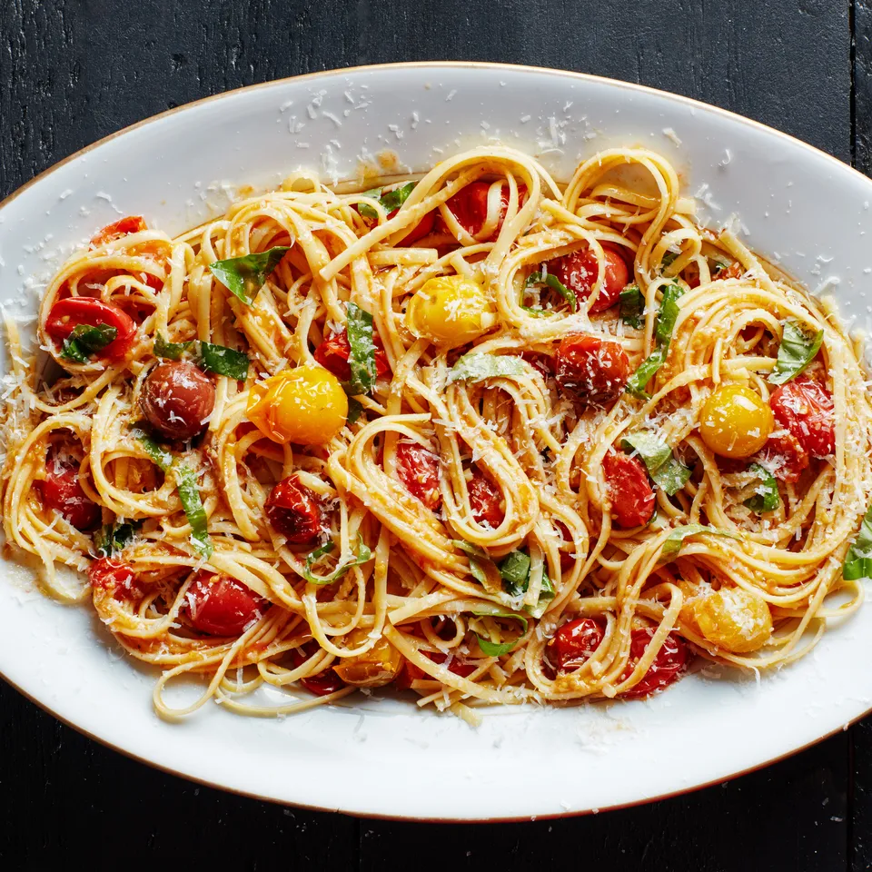

Cherry Tomato Pasta

Pasta with Burst Cherry Tomato Sauce
This is a perfect recipe if you have a garden with plenty of cherry tomatoes. It's quick and only takes 15-20 minutes, and is extremely easy! It's great to have over the summer cause its a light dish.
Ingredients
- 1 lb. pasta
- Kosher salt
- 1/2 cup olive oil
- 2 large garlic cloves, finely chopped
- 3 pints cherry tomatoes
- 1/2 tsp. freshly ground black pepper
- Pinch of sugar
- 1 cup coarsely chopped fresh basil
- Freshly grated parmesan (for serving)
Steps
- Cook pasta in a large pot of boiling salted water, stirring occasionally, until al dente; drain pasta and transfer to a large bowl.
- Meanwhile, heat oil in a 12" skillet or wide heavy saucepan over medium-high. Add garlic, then tomatoes, pepper, sugar, and 1 tsp. salt. Cook, stirring occasionally, until tomatoes burst and release their juices to for a sauce, 6-8 minutes.
- Toss pasta with tomato sauce and basil. Top with parmesan.